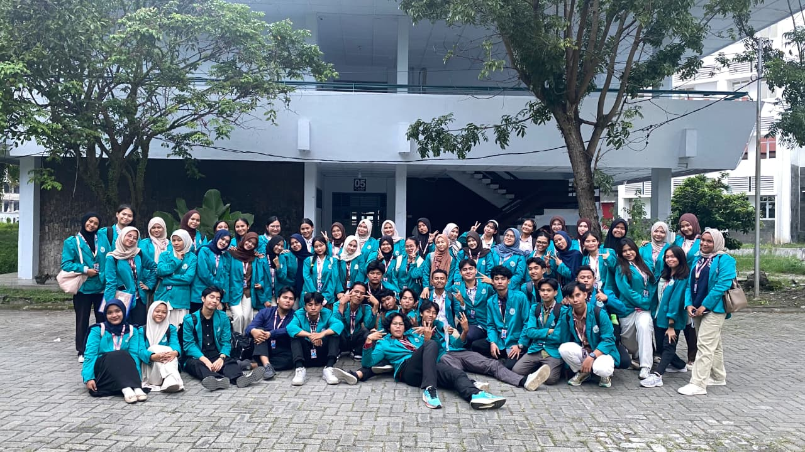

Profil Saya
Informasi Pribadi

| Nama Lengkap | Selvira Triana |
|---|---|
| Program Studi | Ilmu Komputer |
| Tanggal Lahir | 30 Juni 2006 |
| Alamat | Kutacane, Aceh Tenggara |
| Hobi | Membaca, Menari, Mendengarkan Musik |
| Cita-cita | Guru |
Riwayat Pendidikan

SD Negeri 1 Bambel

SMP Negeri 1 Kutacane

SMA Negeri 1 Kutacane

Universitas Negeri Medan
Pengalaman & Organisasi

OSIS
Menjadi anggota OSIS | 2020 - 2022
Aktif dalam kepengurusan OSIS, mengasah soft skill, kepemimpinan, dan kerja sama tim.

Marching Band
Menjadi anggota marching band | 2022 - 2025
Berpengalaman sebagai tim Color Guard, memegang alat bendera untuk mendukung keharmonisan visual, kedisiplinan, dan kekompakan tim.

Panitia PKKMB 2026
Menjadi anggota panitia PKKMB jurusan matematika.
Mengelola divisi publikasi dan dokumentasi visual untuk acara PKKMB jurusan.
Kontak Saya
Email: viraselvira18@gmail.com
Instagram: @selviratriana